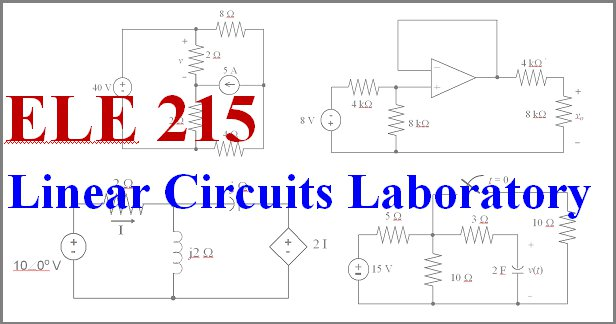

DC measurements, natural and step response of first- and second-order circuits,
AC measurements, impulse and frequency response, operational amplifier circuits.
This course is usually taken concurrently with
ELE 212
Linear Circuit Theory.
Basic information for Spring 2026:
Instructor: Prof. Peter F. Swaszek,
492 Fascitelli Center
Office hours: face-to-face MF 10:00-10:50 and by appointment
Recitation: Fri 2:00-2:50 PM, Edwards Aud. (selected weeks)
Lab periods: 2 hour slot on Monday, Bliss Hall 320 or 380
NOTICES:
- Details on how the course works will be presented during the recitation on Friday
Jan 23 at 2 PM in Edwards Aud.
- Lab sessions start on Monday Jan 26
-
- Oct 1, 2025 - THE INFORMATION BELOW HERE IS ONLY TENTATIVE AND
MAY CHANGE BEFORE JAN OF 2026
Useful links:
syllabus
Generic URI syllabus
Chronological
list
of deliverables
Weekly materials:
- Week 1:
- Friday Jan 23: Recitation 1 (meet in Edwards Aud.)
- Topic - intro to the course; overview of the lab bench equipment
-
Link to the recitation slides
- Benchtop equipment information:
- Digital multimeter:
video,
measuring voltage,
measuring resistance,
measuring capacitance,
short version of the manual,
full user manual
- Signal generator
video,
short version of the manual,
full user manual
- Scope:
video,
the controls,
the gui,
measurements,
saving data,
full user manual
- Power supply:
video,
short version of the manual,
full user manual
- Friday Jan 23 after 3 PM: Prelab 1 (Online)
- Topic - several questions relevant to Lab 1 - worth 15 points
- You do this prelab individually; it is graded immediately and automatically;
the web interface allows you to correct errors and resubmit, but for a decreasing
score
-
Link to the questions; access closes at 5 PM on Friday Jan 30; no late submissions
- Week 2:
- Monday Jan 26: Lab 1
- Meet in Bliss Hall (room 320 or 380 depending upon your section)
- Topic - some lab basics - worth 45 points
- You work with another student on this exercise, see the
pairs list
-
Link to the instructions
-
Link to the summary page (paper copies will be available in the lab rooms);
the summary is due by 5 PM on Wednesday Feb 4 via Brightspace;
submission instructions can be found
here
- Late submissions, discounted 40%,
can be submitted via a second Brightspace link until 5 PM on Feb 11;
submissions will not be accepted after this second date
- Friday Jan 30: Recitation 2 (ONLINE only - no meeting in Edwards)
- Topic - methods of building circuits; comments on Lab 2
-
Link to the recitation slides;
Link to a video presentation
- Links to some URI soldering videos (via panopto):
- Links to some web info:
- Week 3:
- Monday Feb 2: Lab 2 in Bliss Hall
- Topic - PCB assembly - worth 60 points
- You do this exercise individually
- We allocate 2 weeks to this exercise with one-half of the students
building the circuit each week; see this
list ek you attend the lab
-
Link to the instructions
-
Link to the summary page (paper copies will be available in the lab rooms);
the summary is due by 5 PM on Wednesday Feb 18 via Brightspace;
submission instructions can be found
here
- Late submissions, discounted 40%,
can be submitted via a second Brightspace link until 5 PM on Feb 25;
submissions will not be accepted after this second date
- Friday Feb 6: Recitation 3 in Edwards Aud.
- Topic - review of MatLab (from EGR106)
-
Link to the recitation slides
- Need some more review? I can recommend Phil Parisi's youtube
channel
(a former URI student)
- Friday Feb 6 after 3 PM: Exercise 1
- Topic - writing a MatLab function - worth 75 points
- You do this exercise individually
-
Link to the instructions; shells for the 3 functions:
resistor network,
word game, and
palindromic numbers
- The program is due by 9:00 AM on Monday Apr 6 via Brightspace;
submission instructions can be found
here
- Late submissions will not be accepted
- Week 4:
- Monday Feb 9: Lab 2 continued
- Friday Feb 13: Recitation 4 in Edwards Aud
- Topic - using MatLab to solve simultaneous equations
-
Link to the recitation slides
-
Appendix A from 212 text on simultaneous equations
- Friday Feb 13 after 3 PM: Exercise 2 (Online)
- Topic - using MatLab to solve simultaneous equations - worth 25 points
- You do this prelab individually; it is graded immediately and automatically;
the interface allows you to correct errors and resubmit, but for decreasing score
-
Link to the exercise; access closes at 9 AM on Monday Feb 23; no late submissions
- Friday Feb 13 after 3 PM: Prelab 3 (Online)
- Topic - resistor puzzle similar to Lab 3 - worth 30 points
- You do this prelab individually; it is graded immediately and automatically;
the interface allows you to correct errors and resubmit, but for decreasing score
-
Link to the instructions
-
Link to your specific component values and the submission page;
access closes at 9 AM on Monday Feb 23; no late submissions
- Week 5:
- Wednesday Feb 18 (URI Monday schedule): make-up day for Lab 2
- Friday Feb 20: Recitation 5 in Edwards Aud
- Topic - MatLab for plots and simulation
-
Link to the recitation slides
- Friday Feb 20 after 3 PM: Exercise 3 (Online)
- Topic - using MatLab to both solve and simulate a circuit - worth 75 points
- You do this prelab individually;
-
Link to the instructions
-
Link for submitting your ideal voltage and current solutions; it is graded
immediately and automatically; the interface allows you to correct errors and
resubmit, but for decreasing score; access closes at 9 AM on Monday Mar 23;
no late submissions
-
Link to the summary page of the random simulation;
the summary is due by 9 AM on Monday Mar 23 via Brightspace;
submission instructions can be found
here; late submissions will not be accepted
- Week 6:
- Monday Feb 23: Lab 3 in Bliss
- Topic - a resistor puzzle - worth 50 points
- You do this exercise individually
-
Link to the instructions
- Your submission consists of two parts: online submission of your resistor values
here, worth 45 points, plus a summary sheet uploaded via Brightspace
(found
here or a paper copy in the lab rooms), worth 5 points; both are due
by 5 PM on Wednesday Mar 4
- Late submissions, discounted 40%, can be submitted
here
and via a second Brightspace link until 5 PM on Mar 11;
submissions will not be accepted after this second date
- Friday Feb 27: Recitation 6 (ONLINE only - no meeting in Edwards)
- Topic - using the scope as a measurement tool; application to op amp circuits
-
Link to the recitation slides;
Link to a video presentation
- Week 7:
- Monday Mar 2: Lab 4 in Bliss Hall
- Topic - op amps - worth 75 points
- You work with another student on this exercise, see the
pairs list
-
Link to the instructions
-
Link to the summary page (paper copies will be available in the lab rooms);
the summary is due by 5 PM on Wednesday Mar 11 via Brightspace;
submission instructions can be found
here
- Late submissions, discounted 40%,
can be submitted via a second Brightspace link until 5 PM on Mar 18;
submissions will not be accepted after this second date
- Friday Mar 6: Recitation 7 in Edwards
- Topic - Bode plots, relevant to Lab 5
-
Link to the recitation slides
- Week 8:
- Monday Mar 9: Lab 5 in Bliss Hall
- Topic - RC Bode plot - worth 100 points
- You work with another student on this exercise, see the
pairs list; it also shows component values
-
Link to the instructions
-
Link to the summary page (paper copies will be available in the lab rooms);
the summary is due by 5 PM on Wednesday Mar 25 via Brightspace;
submission instructions can be found
here
- Late submissions, discounted 40%,
can be submitted via a second Brightspace link until 5 PM on Apr 1;
submissions will not be accepted after this second date
- Friday Mar 13: Recitation 8 (ONLINE only - no meeting in Edwards)
- Topic - more on Bode plots with relevance to Lab 6
-
Link to the recitation slides;
Link to a video presentation
- Friday Mar 13 after 3 PM: Prelab 6 (Online)
- Topic - characterizing your RLC circuit of Lab 6 - worth 20 points
- You do this prelab individually; your numbers are graded immediately and automatically;
the interface allows you to correct errors and resubmit, but for decreasing score; the
instructions also ask you to print a print copy of your Bode plot to the lab session
for checking
-
Link to the instructions
-
Link for submissiom; access closes at 9 AM on Monday Mar 23; no late submissions
- Week 9:
- Monday Mar 23: Lab 6 in Bliss Hall
- Topic - an RLC bandpass filter - worth 80 points
- You work with another student on this exercise, see the
pairs list; it also shows component values
-
Link to the instructions
-
Link to the summary page (paper copies will be available in the lab rooms);
the summary is due by 5 PM on Wednesday Apr 1 via Brightspace;
submission instructions can be found
here
- Late submissions, discounted 40%,
can be submitted via a second Brightspace link until 5 PM on Apr 8;
submissions will not be accepted after this second date
- Friday Mar 27: Recitation 9 (ONLINE only - no meeting in Edwards)
- Topic - circuit discovery; comments for Lab 7
-
Link to the recitation slides;
Link to a video presentation
- Friday Mar 27 after 3 PM: Prelab 7
- Topic - characterizing your circuit of Lab 7 - worth 20 points
- You do this prelab individually; your numbers are graded immediately and automatically;
the interface allows you to correct errors and resubmit, but for decreasing score; the
instructions also ask you to print a print copy of your Bode plot to the lab session
for checking
-
Link to the instructions
-
Link for submission; access closes at 9 AM on Monday Mar 30; no late submissions
- Week 10:
- Monday Mar 30: Lab 7 in Bliss Hall
- Topic - building and teesting a notch filter - worth 80 points
- You work with another student on this exercise, see the
pairs list; it also shows component values
-
Link to the instructions
-
Link to the summary page (paper copies will be available in the lab rooms);
the summary is due by 5 PM on Wednesday Apr 8 via Brightspace;
submission instructions can be found
here
- Late submissions, discounted 40%,
can be submitted via a second Brightspace link until 5 PM on Apr 15;
submissions will not be accepted after this second date
- Monday Mar 30 after your lab session: Exercise 4 (Online)
- Topic - updating your notch filter Bode plot - worth 50 points
- You work with your Lab 7 partner on this exercise
-
Link to the instructions
-
Link to the summary page;
the summary is due by 5 PM on Wednesday Apr 15 via Brightspace;
submission instructions can be found
here; late submissions will not be accepted
- Friday Apr 3: Recitation 10 in Edwards
- Topic - the Black Box project
-
Link to the recitation slides
- Extra information:
- You can work with a partner of your choosing on this project
- Partnerships should be identified today and your box picked up;
note that both students must be present to sign the "team" form
- Week 11:
- Monday April 6: Black Box Project in Bliss Hall
- You work with another student on this exercise; ideally you chose
your partner during Recitation 10 on April 3, if not, you must do so
today !!
- Instructions for this project were provide during Recitation 10 on
April 3; refer to those posted slides for details
- Deliverables (see the Recitation 10 slides for details):
- "Initial" results of resistor values and circuit configuration,
worth 50 points; submitted online
here;
(note that only one of your team submits this);
your answers are graded immediately and automatically;
the online tool allows for corrections, but at decreasing score;
access closes at 5 PM on Wednesday Apr 15; NO late submissions
- The final project report - 150 points - submitted as a pdf document
via Brightspace; this is due by 5 PM on Friday May 1; NO late submissions
- Friday Apr 10: Recitation 11 cancelled
- Week 12:
- Monday April 13: Black Box continued
- Open lab time in Bliss 320 10-2, 3-5 today
- Additional hours during the week
will be posted here later in the semester
- Friday Apr 17: Recitation 12 cancelled
- Week 13:
- Monday April 20: Black Box continued
- Open lab time in Bliss 320 10-2, 3-5 today
- Additional hours during the week
will be posted here later in the semester
- Friday Apr 24: Recitation 13 cancelled
- Week 14:
- Monday April 27: Black Box continued
- Open lab time in Bliss 320 10-2, 3-5 today
- Additional hours during the week (Tues and/or Wed)
will be posted here later in the semester
- Lab ends Wednesday Apr 27